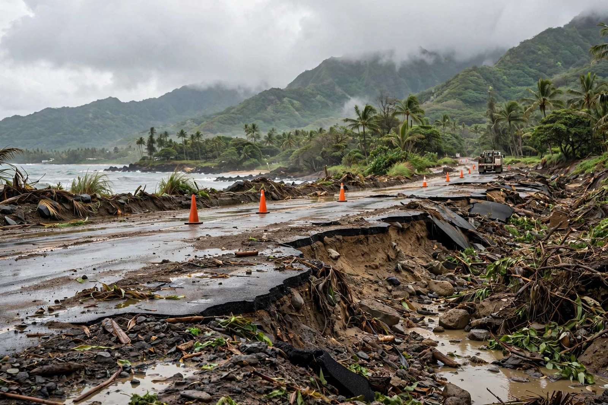

होनोलूलू, हवाई: तूफान से क्षतिग्रस्त सड़कों और पुलों की मरम्मत के लिए हवाई को 8.14 करोड़ डॉलर संघीय धन मिलेगा
अमेरिकी परिवहन विभाग का धन उन सड़कों, पुलों और अन्य संरचनाओं की मरम्मत के लिए भुगतान करेगा जो मार्च 2026 में द्वीपों से टकराए Kona low तूफानों में बाढ़ में डूब गई थीं।

मुख्य बिंदु
- हवाई को संघीय धन में लगभग 8.14 करोड़ डॉलर मिलेंगे, ताकि उन सड़कों, पुलों और अन्य संरचनाओं की मरम्मत हो सके जो मार्च 2026 में द्वीपों से टकराए Kona low तूफानों के दौरान बाढ़ में डूबकर क्षतिग्रस्त…
- Schatz ने कहा, «यह नया संघीय वित्तपोषण तूफान से क्षतिग्रस्त सड़कों और संरचनाओं की मरम्मत में मदद करेगा, क्योंकि इस वर्ष की ऐतिहासिक बाढ़ से उबरने का काम जारी है। हम संघीय संसाधन पहुंचाने के लिए…
- सीनेट की Appropriations Committee के वरिष्ठ सदस्य Schatz ने कहा कि उन्होंने हवाई की बहाली के लिए संघीय समर्थन के लिए जोर दिया था और नुकसान के बारे में अमेरिकी परिवहन सचिव Sean Duffy से सीधे बात की थी।
हवाई को संघीय धन में लगभग 8.14 करोड़ डॉलर मिलेंगे, ताकि उन सड़कों, पुलों और अन्य संरचनाओं की मरम्मत हो सके जो मार्च 2026 में द्वीपों से टकराए Kona low तूफानों के दौरान बाढ़ में डूबकर क्षतिग्रस्त हो गई थीं। अमेरिकी सीनेटर Brian Schatz ने 22 अक्टूबर 2026 को वित्तपोषण की घोषणा की और कहा कि यह धन अमेरिकी परिवहन विभाग से आता है।
Schatz ने कहा, «यह नया संघीय वित्तपोषण तूफान से क्षतिग्रस्त सड़कों और संरचनाओं की मरम्मत में मदद करेगा, क्योंकि इस वर्ष की ऐतिहासिक बाढ़ से उबरने का काम जारी है। हम संघीय संसाधन पहुंचाने के लिए काम करते रहेंगे ताकि प्रभावित समुदाय फिर से अपने पैरों पर खड़े हो सकें।»
सीनेट की Appropriations Committee के वरिष्ठ सदस्य Schatz ने कहा कि उन्होंने हवाई की बहाली के लिए संघीय समर्थन के लिए जोर दिया था और नुकसान के बारे में अमेरिकी परिवहन सचिव Sean Duffy से सीधे बात की थी।
जिन तूफानों ने नुकसान किया
मार्च 2026 में दो Kona low तूफान प्रणालियों ने हवाई को मारा। पहली 10 मार्च के आसपास आई और द्वीपों को भिगो गई। दूसरी प्रणाली 15 से 23 मार्च वाले सप्ताह में आई, जो पहले से संतृप्त जमीन पर गिरी। गवर्नर Josh Green की आपातकालीन घोषणाओं में कहा गया कि तूफानों ने सड़कों, राजमार्गों, सार्वजनिक बुनियादी ढांचे और इमारतों तथा घरों और अन्य निजी संपत्ति को व्यापक नुकसान पहुंचाया, जिसमें Oahu के उत्तरी किनारे के समुदायों में विनाशकारी बाढ़ आई।
20 मार्च 2026 को दूसरे तूफान ने Oahu के उत्तरी किनारे पर जीवन के लिए खतरनाक आकस्मिक बाढ़ पैदा की। 19 मार्च की शाम से 20 मार्च की सुबह तक लगभग 12 घंटों में उत्तरी Oahu के हिस्सों में 13 इंच से अधिक बारिश हुई। Haleiwa और Waialua क्षेत्रों में बाढ़ ने सड़क संपर्क काट दिया, निकासी के आदेश शुरू किए और आपातकालीन अभियान चलाए। प्रतिक्रिया के राज्य रिकॉर्ड में 21 मार्च 2026 को Oahu पर बह गई सड़क के ऊपर उड़ता सेना का हेलीकॉप्टर दल शामिल है।
सभी द्वीपों में बाढ़ ने सड़कें बंद कीं, घरों में पानी घुसा और भूस्खलन हुए। Green ने 24 मार्च 2026 को संघीय आपदा घोषणा का अनुरोध किया, और यह 7 अप्रैल 2026 को मंजूर हुई। नया परिवहन धन उस भौतिक नेटवर्क पर लक्षित है जिसे तूफानों ने तोड़ा: वे सड़कें, पुल और अन्य संरचनाएं जिन्हें काउंटियों और राज्य को सामान्य यात्रा पूरी तरह बहाल होने से पहले फिर से बनाना होगा।
राष्ट्रीय पैकेज का हिस्सा
हवाई का धन एक राष्ट्रीय आवंटन के भीतर है जिसकी घोषणा परिवहन विभाग ने 19 अक्टूबर 2026 को की थी। विभाग ने 34 राज्यों, District of Columbia, Puerto Rico, अमेरिकी वर्जिन द्वीप समूह, Guam और Northern Mariana Islands में आपदा से क्षतिग्रस्त सड़कों और पुलों को बहाल करने के लिए आपातकालीन राहत वित्तपोषण में 1.6 अरब डॉलर से अधिक का निर्देशन किया। उस राष्ट्रीय विज्ञप्ति में, हवाई को मार्च 2026 के Kona low तूफानों की शृंखला से हुए नुकसान के लिए 8.1 करोड़ डॉलर पर सूचीबद्ध किया गया था, वही शृंखला जिसे Schatz ने राज्य के लिए 8.14 करोड़ डॉलर में विस्तार से बताया।
Duffy ने विभाग की घोषणा में कहा, «सुरक्षित सड़कें और पुल का मतलब है कि बचाव सेवाएं तेजी से पहुंचती हैं, चिकित्सा पेशेवर जरूरतमंदों तक पहुंच सकते हैं, और परिवारों को उबरने के लिए आवश्यक संसाधन मिल सकते हैं।»
Schatz की घोषणा के अनुसार, हवाई को Federal Highway Administration के Emergency Relief Program से 2020 में बाढ़ से क्षतिग्रस्त हुए Kauai के पुलों की मरम्मत के लिए अलग से 23 लाख डॉलर भी मिलेंगे। वह पुराना नुकसान एक पंक्ति में दिखाता है कि द्वीपों में तूफान की मरम्मत कितनी लंबी चल सकती है: छह साल पहले की बाढ़ अब भी मरम्मत धन खींच रही है, जबकि राज्य मार्च 2026 की कहीं बड़ी बहाली पर काम कर रहा है।
ड्राइवरों के लिए इसका मतलब
निवासियों के लिए, वित्तपोषण की परीक्षा सड़क पर दिखेगी। Oahu और पड़ोसी द्वीपों पर बह गए हिस्से, क्षतिग्रस्त पुल और बाढ़ से प्रभावित संरचनाएं वे मार्ग हैं जिनका उपयोग लोग काम, स्कूल, चिकित्सा देखभाल और डिलीवरी के लिए करते हैं। राज्य अधिकारियों ने इस कहानी के लिए समीक्षा की गई घोषणाओं में 8.14 करोड़ डॉलर के लिए परियोजना-दर-परियोजना सूची प्रकाशित नहीं की है। धन संघीय स्तर पर प्रतिबद्ध है, और मरम्मत कार्य स्वयं आने वाले महीनों में राज्य और काउंटी परियोजनाओं के रूप में सामने आएगा। Hawaii Department of Transportation जैसे-जैसे परियोजना सूचियां प्रकाशित करेगा, The Orbit Post उनका अनुसरण करेगा।
टाइमलाइन
- Mar 10, 2026दो Kona low तूफान प्रणालियों में से पहली हवाई पहुंचती है, जो पूरे राज्य में भारी बारिश और नुकसानदेह हवाएं लाती है और जमीन को संतृप्त कर देती है।
- Mar 20, 2026दूसरा Kona low Oahu के उत्तरी किनारे पर जीवन के लिए खतरनाक आकस्मिक बाढ़ पैदा करता है, जिसमें लगभग 12 घंटों में उत्तरी Oahu के हिस्सों में 13 इंच से अधिक बारिश होती है। Haleiwa और Waialua में बाढ़ सड़क संपर्क काटती है और निकासी के आदेश शुरू करती है।
- Apr 7, 2026हवाई के लिए संघीय आपदा घोषणा, जिसका अनुरोध गवर्नर Josh Green ने 24 मार्च को किया था, मंजूर हो जाती है।
- Oct 19, 2026अमेरिकी परिवहन विभाग 34 राज्यों और कई क्षेत्रों में आपदा से क्षतिग्रस्त सड़कों और पुलों के लिए आपातकालीन राहत में 1.6 अरब डॉलर से अधिक की घोषणा करता है, जिसमें मार्च 2026 के Kona low नुकसान के लिए हवाई 8.1 करोड़ डॉलर पर सूचीबद्ध है।
- Oct 22, 2026सीनेटर Brian Schatz घोषणा करते हैं कि हवाई को तूफान से क्षतिग्रस्त सड़कों, पुलों और संरचनाओं के लिए परिवहन विभाग से लगभग 8.14 करोड़ डॉलर मिलेंगे, साथ ही 2020 में बाढ़ से क्षतिग्रस्त Kauai पुलों की मरम्मत के लिए 23 लाख डॉलर भी मिलेंगे।
स्रोत
- Maui Now: More than $80M heading to Hawai'i to repair roads, bridges, structures damaged by Kona low storms
- AASHTO Journal: FHWA issues $1.6B worth of emergency relief funding
- The Trucker: USDOT directs $1.6 billion to repair disaster-damaged roads and bridges
- The Watchers: Kona low triggers life-threatening flooding on O'ahu's North Shore, Hawaii
- State of Hawaii: Fifth proclamation relating to the March 2026 Kona low weather event